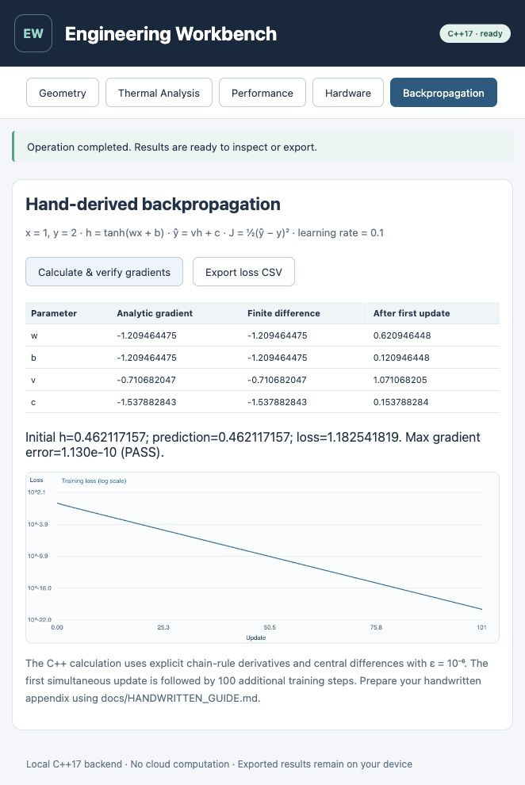
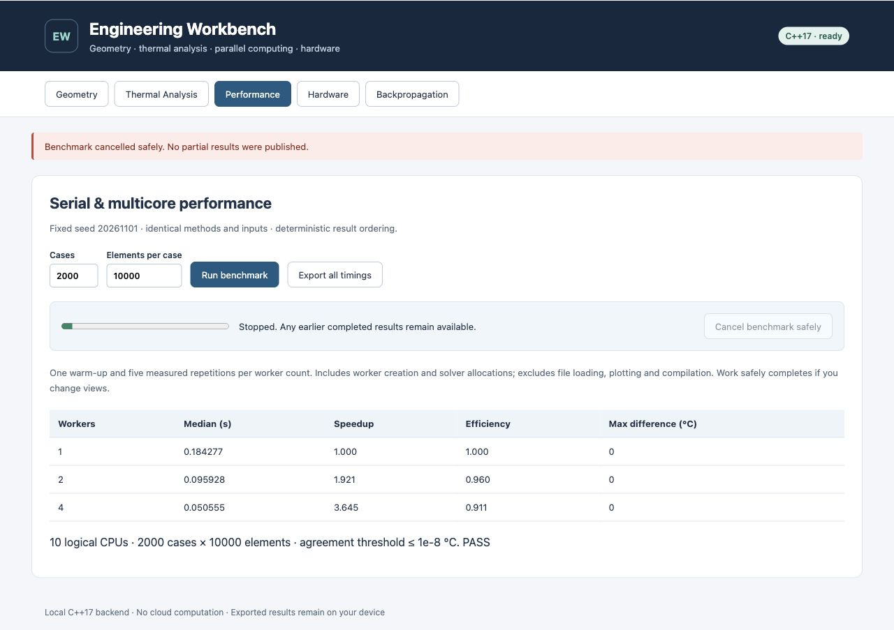
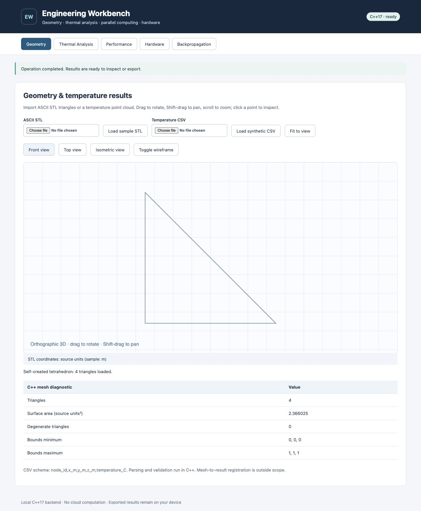
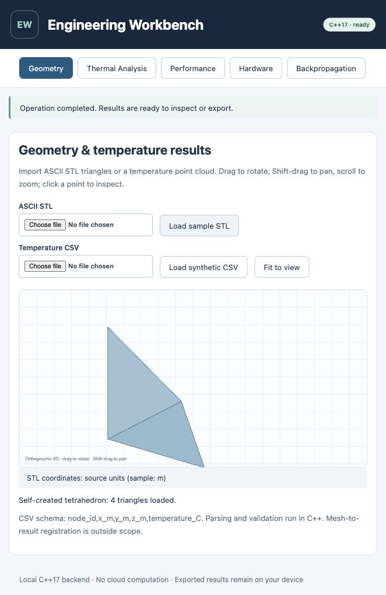
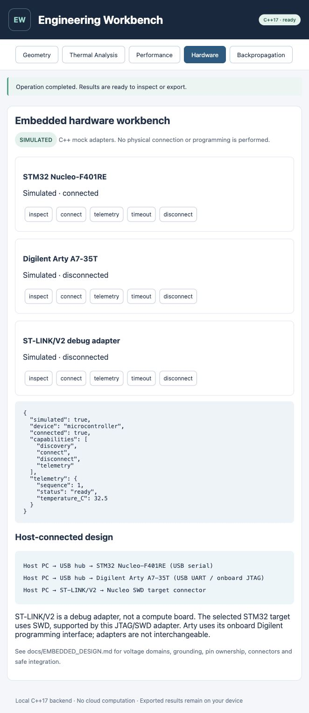
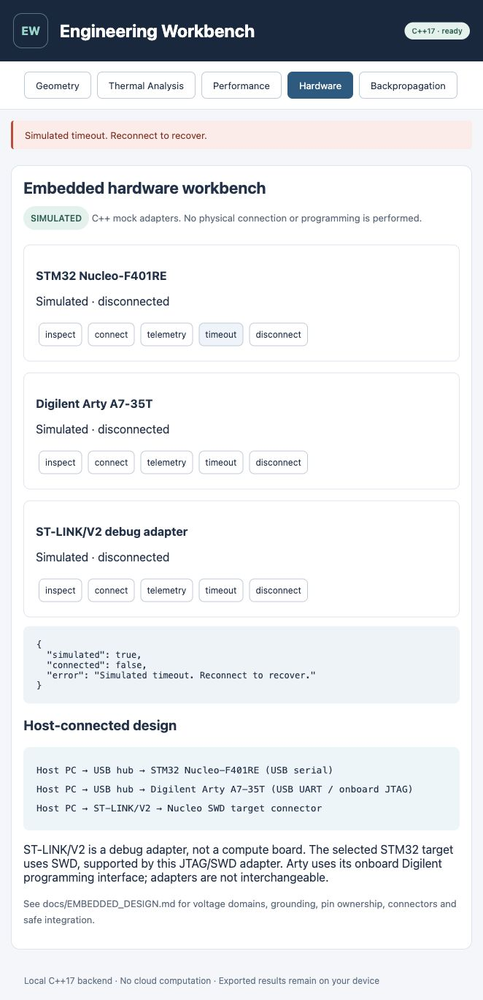
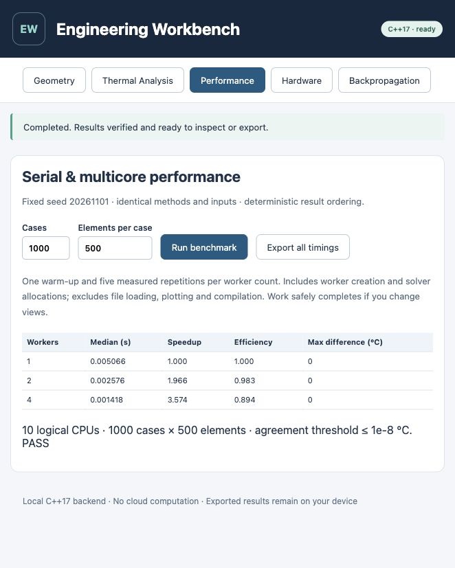
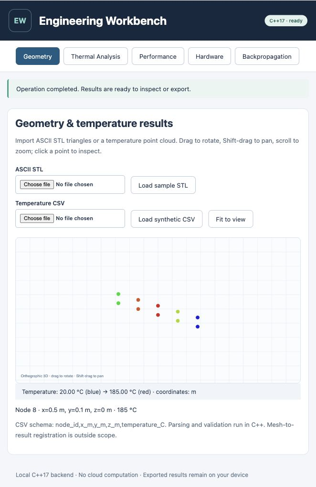
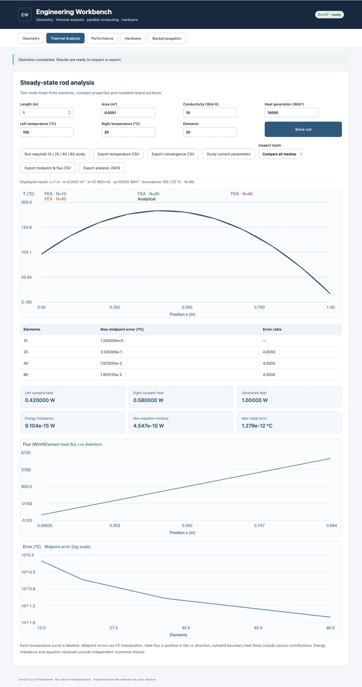
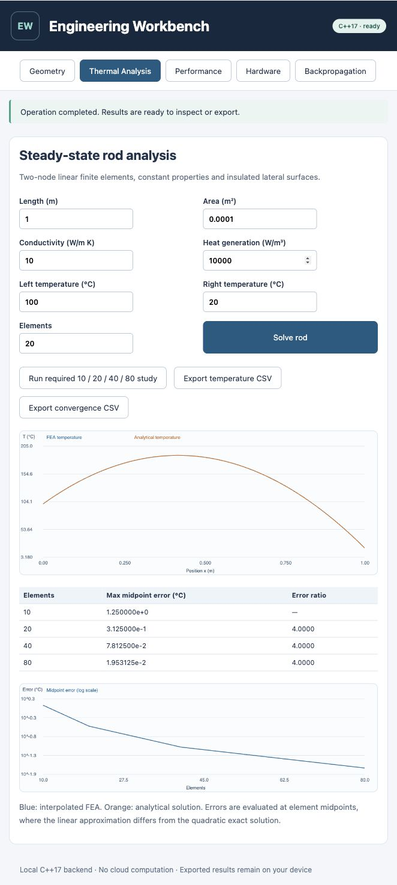

Actual Mac browser captures, accompanied by core/integration logs and raw numerical CSVs in generated/. This is the screenshot-walkthrough alternative to a demo video. Windows x64 builds but actual Windows launch has not been verified. The browser CSV export was exercised; downloads require normal browser support.
Captured 2026-11-01T12:39:31.713Z UTC on Mac. Explicit gradients, central-difference agreement and 101 updates displayed.

Captured 2026-11-01T12:58:52.743Z UTC on Mac. Active benchmark cancelled safely. Partial results were discarded and the earlier completed result table remained available.

Captured 2026-11-01T12:54:20.660Z UTC on Mac. Version 1.1 C++ mesh summary, surface area/bounds, camera presets and wireframe view.

Captured 2026-11-01T12:22:52.437Z UTC on Mac. Self-created ASCII STL: four triangles loaded. Rotate/pan/zoom/fit controls are available.

Captured 2026-11-01T12:41:28.057Z UTC on Mac. Reconnect restores simulated device state and telemetry.

Captured 2026-11-01T12:40:07.691Z UTC on Mac. Simulated microcontroller timeout leaves backend and UI disconnected.

Captured 2026-11-01T12:42:13.285Z UTC on Mac. Actual browser benchmark (1000 cases x 500 elements); full report uses separately recorded 2000 x 5000 workload.

Captured 2026-11-01T12:22:57.813Z UTC on Mac. Synthetic temperature nodes, units and legend; clicked node 8 inspected at 185 C.

Captured 2026-11-01T13:02:52.228Z UTC on Mac. Version 1.1 mesh comparison, outward heat flows, energy balance, flux and richer exports.

Captured 2026-11-01T12:43:29.904Z UTC on Mac. Required four-mesh thermal study and analytical comparison; factor-four error reduction.
